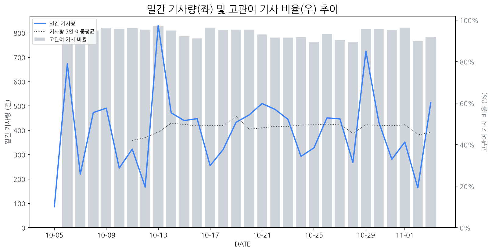

1
시장 활동 지표
기사량 추세 & 이상 징후 탐지
시장의 '전체 기사량'이 평소보다 비정상적으로 급증했는지(Spike)를 차트로 확인하고, LLM이 분석한 급등의 핵심 원인을 파악할 수 있음

고관여 기사란? 산업 연관 키워드로 수집된 기사들 중 디스플레이 키워드에 가중치를 반영하여 도출된 관련성 높은 기사
수집된 기사 수 (2026-11-03)
514
+15% WoW
기사량 변동 수준 (7일 이동평균 대비)
±6.7% 이하
2
오늘의 키워드
급격한 관심 ↑, 주목해야 할 키워드
1
kaist
+4.6σ
KAIST의 VR 촉각 시각화 및 로봇 통합 플랫폼 기술 개발 소식이 AI 산업 표준화 협력과 맞물려 주목받았습니다.
Related Metrics
금일 언급량: 13, 전일 대비: +13
Interpretation
XR/로봇 기술 투자 확대 시사
Next Step
'kaist' 관련 상세 기사 및 경쟁사 반응 모니터링
2
고효율
+4.2σ
관련 기사 없음.
Related Metrics
금일 언급량: 11, 전일 대비: +11
Interpretation
분석 불가
Next Step
'고효율' 관련 상세 기사 및 경쟁사 반응 모니터링
3
lg디스플레이
+3.5σ
LG디스플레이, 'FLiPP' 기술 및 ESG 경영 차별화로 투자자 관심 증폭
Related Metrics
금일 언급량: 24, 전일 대비: +22
Interpretation
기술 리더십 강화 및 지속가능성 부각
Next Step
'lg디스플레이' 관련 상세 기사 및 경쟁사 반응 모니터링
4
vr
+3.1σ
KAIST의 VR 협업 기술 개발 성공으로 촉각 시각화 및 공유 가능성이 부각되었습니다.
Related Metrics
금일 언급량: 8, 전일 대비: +8
Interpretation
VR 디스플레이 기술 수요 확대
Next Step
'vr' 관련 상세 기사 및 경쟁사 반응 모니터링
3
실시간 Risk 키워드
경계해야 할 시그널 탐지
특정 토픽의 부정 감성 점수가 급등할 때 이를 즉시 탐지하고, "근거 기사" 링크를 통해 리스크의 실체를 빠르게 파악할 수 있음
키워드 분석 결과, 오늘은 걱정할 만한 하락 신호가 없습니다. (부정 언급량 변화: +1.5σ 이내)
4
주요 이벤트 모니터링
실시간 산업 동향 파악을 위한 주요 활동
최근 발생한 주요 기업들의 신제품 출시, 투자 등 주요 이벤트를 제공하여 매일 경쟁사 동향을 확인할 수 있음
애플이 11월 6일 신형 맥북 프로를 출시하며, 기본 모델은 2,899달러부터 시작하고 최고 사양인 16TB 모델은 14,000달러에 달한다.
Impact
고성능 및 대용량 스토리지 수요 증가로 디스플레이 패널의 고해상도, 고주사율, 대면적화 트렌드를 가속화할 수 있다.
Next Step
고성능 디스플레이 기술 개발에 집중하고, 애플과 같은 주요 고객사의 차세대 요구사항을 선제적으로 파악하여 맞춤형 솔루션을 제공해야 한다.
삼성디스플레이가 아산 A7 라인 공정을 탄력화하며 8.6세대 하이엔드 OLED 생산 능력 확보에 나섰습니다. 이는 고부가가치 하이엔드 제품 시장에서의 경쟁력 강화 전략의 일환입니다.
Impact
이번 투자는 하이엔드 OLED 패널 시장의 공급 확대 및 가격 경쟁 심화를 유발할 가능성이 있으며, 관련 기술 개발 및 원자재 수급에도 영향을 미칠 수 있습니다.
Next Step
경쟁사들은 하이엔드 OLED 시장 동향을 면밀히 주시하며, 차별화된 기술 개발 또는 특정 응용 분야 공략을 통한 경쟁 우위 확보 전략을 신속히 수립해야 합니다.
애플이 폴더블폰 생산과 관련 메모리 확보에 어려움을 겪고 있다는 소식입니다. 이는 신규 폴더블폰 시장 진입에 예상치 못한 난관에 봉착했음을 시사합니다.
Impact
애플의 폴더블폰 출시 지연 또는 축소는 잠재적으로 폴더블 디스플레이 시장의 성장 속도를 둔화시키고, 관련 부품 공급망에 불확실성을 야기할 수 있습니다.
Next Step
주요 디스플레이 제조 기업은 애플의 시장 진입 상황을 예의주시하며, 폴더블 디스플레이 생산 능력 및 기술 개발 속도를 조절하고 대체 수요처 확보 전략을 강구해야 합니다.
2026년 11월 3일, KFT 모닝 브리프는 국내외 주요 경제 뉴스를 다루었습니다. 해당 브리핑은 거시 경제 동향 및 시장에 영향을 줄 수 있는 최신 정보를 제공했습니다.
Impact
거시 경제 지표의 변화는 디스플레이 패널 수요, 원자재 가격 변동, 투자 심리에 영향을 미쳐 디스플레이 시장의 단기 및 장기 성장 전망에 불확실성을 증대시킬 수 있습니다.
Next Step
디스플레이 제조 기업은 발표된 경제 뉴스를 면밀히 분석하여 잠재적인 시장 수요 변화와 비용 구조에 미치는 영향을 파악하고, 이에 따른 생산 및 재고 관리 전략을 조정해야 합니다.